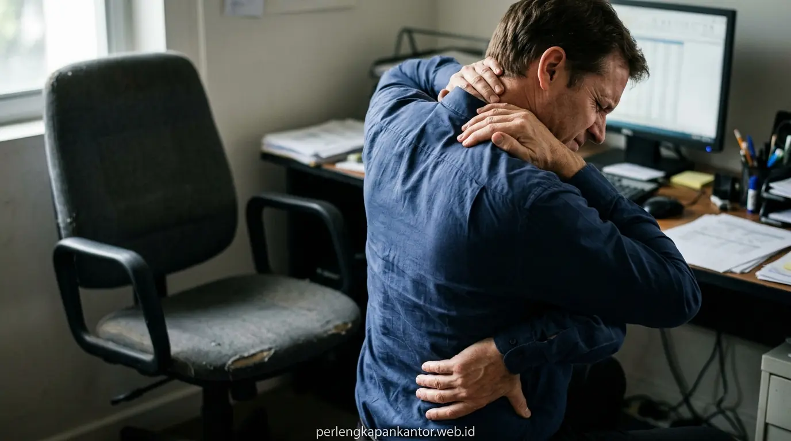

5 Masalah Kesehatan Akibat Kursi Kantor yang Tidak Ergonomis
Bahaya kursi kantor tidak ergonomis mencakup nyeri punggung kronis, ketegangan leher ekstrem, gangguan sirkulasi darah, carpal tunnel syndrome, serta penurunan drastis fokus dan efisiensi kerja.


Penggunaan kursi kerja non-standar tanpa penopang lumbar memicu tekanan berlebih pada ruas tulang belakang saat duduk berjam-jam.
- Beban Tulang Belakang: Duduk pada kursi tanpa kurva lumbar meningkatkan tekanan intradiskal lumbal hingga 40% dibanding posisi berdiri tegap.
- Penyakit Akibat Duduk Lama: Menurunnya sirkulasi darah pada tungkai bawah berisiko menimbulkan varises, pembengkakan kaki, dan kelelahan otot metabolik.
- Dampak ke Produktivitas: Sakit leher akibat duduk salah dan nyeri punggung bawah terbukti menyumbang hingga 25% penurunan output kerja harian.
- Solusi Ergonomi Terpadu: PerlengkapanKantor menghadirkan kursi ergonomis berstandar BIFMA dengan penyesuaian multi-arah untuk perlindungan kesehatan jangka panjang.
- Mengapa Kursi Kantor Non-Ergonomis Menjadi Ancaman Tersembunyi di Tempat Kerja?
- Apa Saja 5 Masalah Kesehatan Utama Akibat Duduk di Kursi yang Salah?
- Bagaimana Mekanisme Sakit Leher Akibat Duduk Salah Terjadi Saat Menatap Layar?
- Tabel Komparasi: Kursi Kantor Konvensional vs Kursi Kantor Ergonomis B2B
- Fitur Anatomi Apa Saja yang Wajib Dimiliki Kursi Kerja Ergonomis Berkualitas?
- Mengapa Investasi Kursi Ergonomis PerlengkapanKantor Menguntungkan Finansial Perusahaan?
- FAQ: Pertanyaan Umum Seputar Ergonomi Kerja & Pengadaan Kursi Kantor
- Kesimpulan Praktis
Mengapa Kursi Kantor Non-Ergonomis Menjadi Ancaman Tersembunyi di Tempat Kerja?
Kursi kantor non-ergonomis memicu postur bungkuk terus-menerus yang memaksa ligamen dan otot tulang belakang menahan beban tubuh secara tidak seimbang sepanjang hari.
Bagi sebagian besar pekerja profesional, manajer operasional, dan staf administrasi modern, lebih dari 7 hingga 9 jam setiap hari dihabiskan dalam posisi duduk di depan meja kerja. Ketika sarana duduk yang digunakan tidak dirancang mengikuti lekuk alamiah tulang punggung manusia (lordosis lumbal), tubuh akan secara otomatis mencari kompensasi posisi yang salah, seperti bersandar miring, merosot ke depan (slouching), atau menyilangkan kaki.
Berdasarkan data statistik dari Occupational Safety and Health Administration (OSHA, 2024), gangguan muskuloskeletal terkait pekerjaan (Work-related Musculoskeletal Disorders/MSDs) menyumbang lebih dari 33% dari seluruh kasus cedera kerja korporat. Di Indonesia, laporan Asosiasi Ergonomi & Higiene Industri (2025) menunjukkan bahwa 68% pekerja kantoran di kota-kota besar mengeluhkan nyeri punggung bawah dan kekakuan bahu setidaknya dua kali dalam seminggu akibat furnitur kerja yang tidak memenuhi standar ergonomi.
Dampak buruk ini tidak hanya berimbas pada fisik individu, melainkan juga menciptakan kerugian finansial laten bagi perusahaan akibat absensi sakit yang tinggi, penurunan fokus mental, serta pergantian staf yang cepat.
Apa Saja 5 Masalah Kesehatan Utama Akibat Duduk di Kursi yang Salah?
Lima masalah kesehatan utama tersebut adalah nyeri punggung bawah kronis, ketegangan leher (text neck), varises dan gangguan sirkulasi, carpal tunnel syndrome, serta kelelahan mental.
Memahami bahaya kursi kantor tidak ergonomis secara spesifik membantu manajemen maupun pengguna perorangan mengambil tindakan preventif sebelum terjadi kerusakan saraf permanen:
Tanpa lumbar support yang tepat, bantalan antar-tulang belakang (intervertebral disc) mengalami kompresi berlebih, memicu peradangan saraf skiatika dan herniasi diskus (saraf kejepit).
Kursi tanpa sandaran kepala (headrest) memicu kepala condong ke depan. Setiap kemiringan 15 derajat menambah beban hingga 12 kg pada otot trapezius dan servikal leher.
Tepi bantalan kursi yang keras menekan pembuluh darah di bawah lutut (popliteal artery), menghambat aliran balik darah ke jantung dan memicu pembengkakan kaki.
Sandaran tangan (armrest) tetap yang tidak sejajar tinggi meja memaksa pergelangan tangan menekuk saat mengetik, menjepit saraf medianus di terowongan karpal.
Postur bungkuk menekan diafragma dan rongga paru-paru hingga mengurangi kapasitas serapan oksigen hingga 20%, menyebabkan rasa kantuk di siang hari, hilangnya konsentrasi analitis, dan migrain berulang.
Bagaimana Mekanisme Sakit Leher Akibat Duduk Salah Terjadi Saat Menatap Layar?
Sakit leher akibat duduk salah terjadi ketika ketinggian dudukan yang tidak selaras memaksa kepala menengadah atau menunduk ekstrem secara statis selama berjam-jam.
Ketika Anda duduk di kursi biasa tanpa pengaturan ketinggian pneumatik (gas lift) dan sandaran punggung yang kaku, posisi mata Anda jarang sejajar dengan garis horizontal sepertiga atas monitor. Akibatnya, tulang leher bagian atas (cervical spine C1-C7) menerima regangan asimetris.
Penyakit akibat duduk lama ini lama-kelamaan mengubah kurvatur alami leher menjadi rata (loss of cervical lordosis). Rasa kaku yang menjalar ke belikat, nyeri kepala bagian belakang (cervicogenic headache), dan rasa kebas hingga ujung jari adalah alarm serius bahwa bantalan saraf leher Anda sedang tertekan. Mengganti kursi dengan model yang dilengkapi sandaran kepala 2D/3D serta mekanisme recline fleksibel adalah langkah medis non-invasif paling efektif.
Penyetelan sudut recline dan ketinggian sandaran tangan membantu mendistribusikan bobot tubuh secara merata pada seluruh permukaan kursi.
Tabel Komparasi: Kursi Kantor Konvensional vs Kursi Kantor Ergonomis B2B
Komparasi fitur memperlihatkan kursi ergonomis unggul mutlak dalam fleksibilitas penyesuaian tubuh, daya tahan material rangka, dan garansi resmi jangka panjang.
Berikut adalah perbandingan mendalam antara kursi kerja standar pasar murah dengan unit kursi kantor ergonomis profesional dari PerlengkapanKantor:
| Parameter Penilaian | Kursi Kantor Standar / Non-Ergonomis | Kursi Ergonomis PerlengkapanKantor |
|---|---|---|
| Penopang Tulang Belakang (Lumbar) | Bantalan rata kaku, tanpa lekukan anatomis, memicu kompresi pinggang. | Dynamic Adaptive Lumbar Support yang mengikuti gerakan punggung secara aktif. |
| Pengaturan Sandaran Tangan (Armrest) | Model fixed (mati), tidak bisa diatur tinggi atau sudutnya. | 3D / 4D Adjustable Armrest (naik-turun, maju-mundur, rotasi sudut). |
| Material Sandaran & Dudukan | Busa daur ulang panas dengan cover kulit sintetis mudah robek. | High-Density Molded Foam & Breathable Korean Mesh yang sejuk dan anti-kempes. |
| Mekanisme Reclining & Gas Lift | Kunci tegak tunggal, hidrolik kelas rendah tanpa sertifikasi aman. | Multi-Lock Synchronized Tilting dengan silinder hidrolik BIFMA Class 4. |
| Dampak Terhadap Produktivitas | Pekerja cepat lelah setelah 2 jam duduk, konsentrasi menurun drastis. | Mendukung fokus 8+ jam tanpa pegal, meningkatkan output harian hingga 25%. |
| Garansi & Layanan Purna Jual | Tidak ada garansi atau maksimal 1 bulan toko tanpa suku cadang. | Garansi Resmi 1–2 Tahun untuk hidrolik, mekanisme, dan roda dengan suku cadang siap pasang. |
Fitur Anatomi Apa Saja yang Wajib Dimiliki Kursi Kerja Ergonomis Berkualitas?
Fitur wajib mencakup penopang lumbar vertikal-horizontal, sandaran leher sudut ganda, mekanisme ayun sinkron, bantalan tepi air terjun (waterfall edge), dan basis bintang 5 kokoh.
Saat Anda merencanakan pengadaan atau memperbarui ruang kerja pribadi, perhatikan 5 elemen kunci berikut pada spesifikasi teknis kursi:
- Waterfall Seat Edge: Desain tepi bantalan dudukan yang melengkung turun ke bawah untuk menghilangkan tekanan pada pembuluh saraf paha belakang.
- Breathable Mesh Backrest: Jaring elastis berkualitas tinggi yang memungkinkan sirkulasi udara optimal di iklim tropis, menjaga punggung tetap dingin dan bebas keringat.
- Synchro-Tilt Mechanism: Mekanisme canggih di mana sudut sandaran punggung dan dudukan bergerak seirama dengan rasio 2:1 saat Anda merebahkan badan.
- Tension Control Knob: Kenop pengatur resistensi pegas ayun yang dapat disesuaikan dengan bobot tubuh pengguna (ringan hingga berat).
- Heavy-Duty Nylon/Aluminium Base: Kaki bintang 5 berdiameter minimal 66 cm dengan roda nilon lembut (PU Castors) yang tidak menggores lantai parket atau keramik kantor.
Mengapa Investasi Kursi Ergonomis PerlengkapanKantor Menguntungkan Finansial Perusahaan?
Investasi kursi ergonomis menghemat anggaran klaim rawat jalan BPJS/asuransi, menekan angka absensi sakit karyawan, serta memperpanjang usia aset furnitur hingga bertahun-tahun.
Banyak pemilik usaha dan manajer operasional awalnya memandang kursi kantor ergonomis sebagai pos pengeluaran mewah. Padahal, secara analisa Total Cost of Ownership (TCO), membeli kursi murah non-ergonomis seharga Rp 400 ribuan yang rusak dalam 6 bulan dan menyebabkan penurunan produktivitas tim justru jauh lebih boros dibandingkan berinvestasi pada kursi ergonomis PerlengkapanKantor yang memiliki masa pakai 5–8 tahun.
PerlengkapanKantor hadir sebagai mitra strategis pengadaan furnitur korporat di Indonesia. Kami menyediakan layanan komprehensif mulai dari konsultasi layout ergonomi, pengiriman sample unit untuk trial, opsi skema harga distributor grosir, hingga faktur pajak PPN lengkap untuk kebutuhan akuntansi perusahaan Anda.
FAQ: Pertanyaan Umum Seputar Ergonomi Kerja & Pengadaan Kursi Kantor
Berikut adalah jawaban ringkas terhadap pertanyaan yang paling sering diajukan oleh tim HR, procurement, dan manajer operasional terkait kursi ergonomis:
Kesimpulan Praktis
Mengabaikan bahaya kursi kantor tidak ergonomis adalah pertaruhan mahal bagi kesehatan staf dan kelangsungan produktivitas bisnis Anda. Lindungi postur kerja tim Anda hari ini dengan kursi ergonomis bersertifikasi resmi yang teruji kenyamanannya.
Penulis: Tim Spesialis Perlengkapan Kantor
Divisi riset ergonomi dan pengadaan furnitur korporat di PerlengkapanKantor. Berpengalaman lebih dari 10 tahun membantu ratusan instansi dan perkantoran swasta menciptakan tata ruang kerja sehat dan produktif.